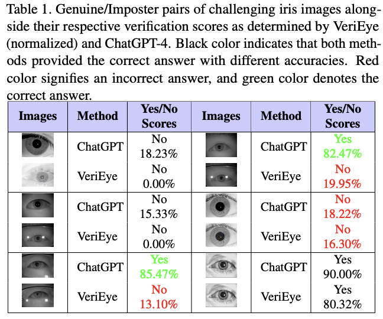
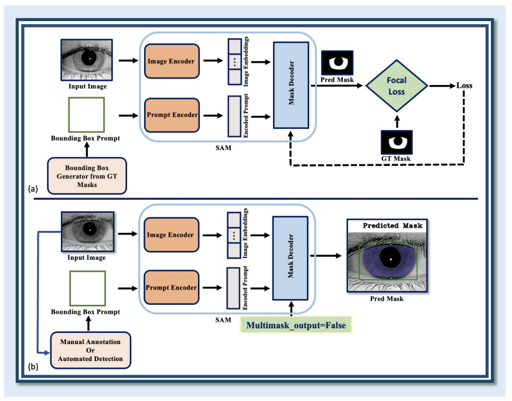
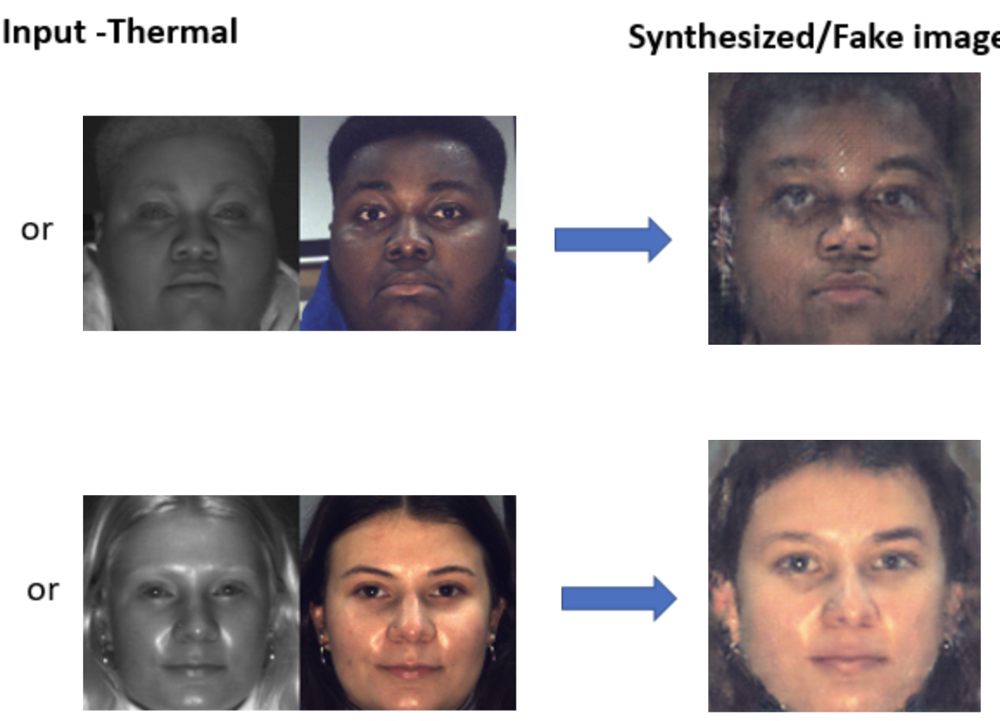

Parisa Farmanifard
Ph.D. Researcher · Biometrics & Computer Vision
iPRoBe Lab, Michigan State University · Advisor: Dr. Arun Ross
About
I am a Ph.D. student in the Department of Computer Science and Engineering at Michigan State University, where I conduct research in the iPRoBe Lab under the guidance of Dr. Arun Ross. I also earned my M.S. in Computer Science from MSU. My research focuses on biometrics, particularly iris recognition and presentation attack detection, with a growing emphasis on integrating foundation models (FMs) and large language models (LLMs) into biometric systems.
Publications
Iris Liveness Detection Competition (LivDet-Iris) – The 2025 Edition
Research Projects
Contact Lens Detection
Working on improving the detection of contact lenses in iris images to prevent fraud in iris recognition systems. Deep learning models are used to distinguish between natural irises and those altered by clear or patterned contact lenses, aiming to boost the security of biometric authentication.

ChatGPT Meets Iris Biometrics
Explores the capabilities of GPT-4 multimodal LLM for iris recognition via zero-shot learning across diverse datasets, presentation attacks, occlusions, and real-world variations. A comparative analysis with Gemini Advanced highlights ChatGPT-4's superior performance and robustness in complex iris analysis tasks.

Iris-SAM: Iris Segmentation Using a Foundation Model
Develops a pixel-level iris segmentation model by fine-tuning the Segment Anything Model (SAM) on ocular images, leveraging Focal Loss to address class imbalance. Achieves 99.58% average segmentation accuracy on ND-IRIS-0405, surpassing the previous best baseline of 89.75%.

Cross-Spectral Face Recognition Using GANs
Addresses matching faces across different spectral bands (SWIR vs. VIS). Computes ArcFace match scores between synthesized and original cross-spectral images via SG-GAN, achieving well-separated identity histograms and strong discrimination accuracy. Highlights the value of image enhancement for challenging outdoor scenarios.
Poster Presentations
- "Eye Contact: A Dual-Stage Approach for Automated Contact Lens Detection" — University of Notre Dame (UND), 2025
- "ChatGPT Meets Iris Biometrics" — IJCB 2024, Buffalo, NY
- "Iris-SAM: Iris Segmentation Using a Foundation Model" — Engineering Graduate Research Symposium 2024, MSU
- "Cross-Spectral Face Recognition Using a Semantic-Guided GAN" — Engineering Graduate Research Symposium 2023, MSU
Education
Doctor of Philosophy, Computer Science
Michigan State University, USA · 2021 – Present
Master of Science, Computer Science
Michigan State University, USA · 2021 – 2023
Bachelor of Engineering, IT Engineering
MU · 2013 – 2017
Experience
American Electric Power (AEP) — Emerging Technology Group
Led a project on drone-based pole detection, collaborating with a computer vision and machine learning team. Applied and evaluated multiple detection frameworks including Detectron2, YOLOv4, YOLOv8, and the Segment Anything Model (SAM) on drone imagery.